Combinational Logic Circuits are Digital logic circuits without memory.
It’s output at any instant depends only on the combination of its present inputs.
Since combinational logic circuits are without memory , there is no feedback. (From output to input)
Output changes as change in input take place and delay is depend upon propagation delays of number of logic gates between input and output.
Note: / Sequential Logic Circuits (next chapter) outputs are dependant not only on present inputs but also on their previous output state.
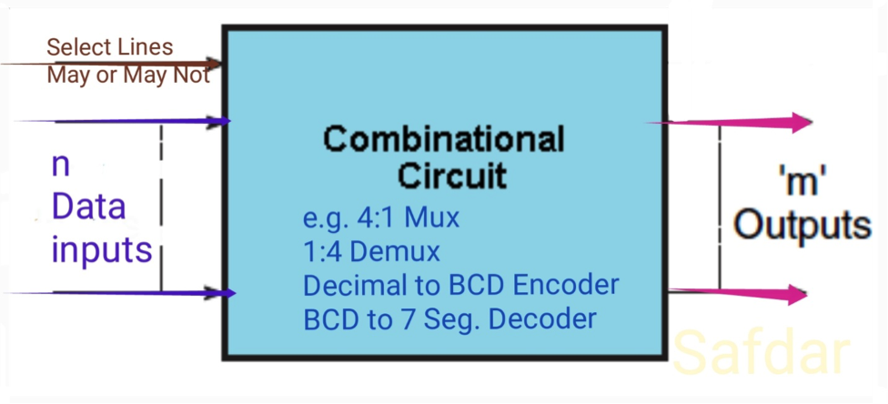
Adders , Subtractors which are types of Combinational circuits completed in previous chapter.
In this chapter, Data transmission, Code converter applications, Mux, Demux, Encoders and Decoders, BCD to 7 Segment display will be discuss.
Classification of Combinational Logic Circuits
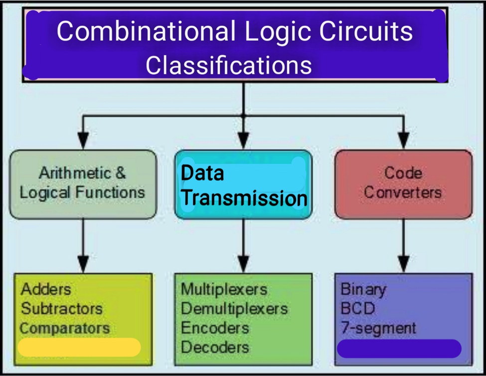
Multiplexers ( Mux) or Data selector ……(Many to One)
Multiplexers are also called as data selectors.
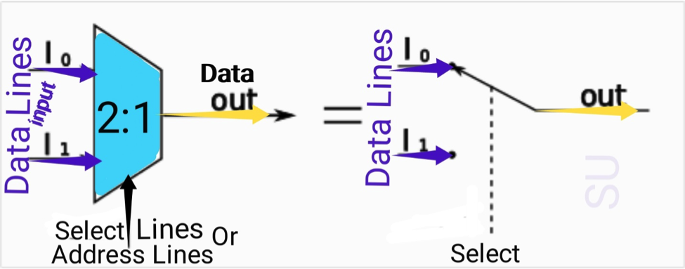
Above diagrams gives the idea how Mux selects input data.
Mux- Demux combination reduces wiring between inputs and outputs and reduces overall cost and make maintenance easy.
LHS circuit selects electronically and RHS manually.
Example of application of Mux.
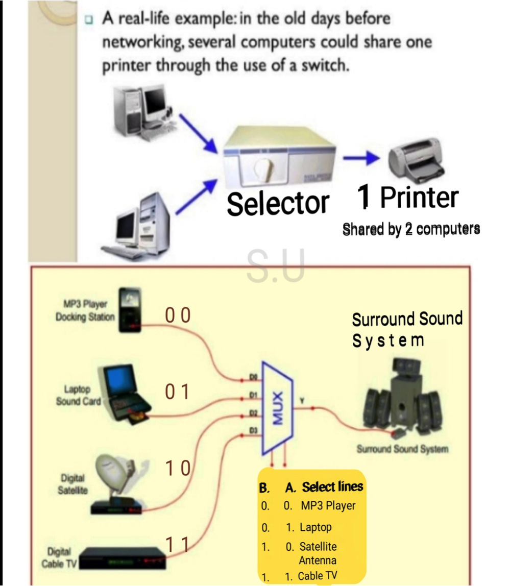
Multiplexers, is an electronic device that selects between multiple analog or digital input signals and forwards it to a device on a single output line. A multiplexer of 2n inputs has n select lines, which are used to select which input line to send to the output.. 4 input lines need 2 select lines.
In others words…..
• Multiplexer is a combinational circuit that selects binary information from one of many inputs lines and directs it to a single output line.
• The selection of a particular input line is controlled by a group of selection lines.
• There are 2n input lines and n selection lines whose bit combination determine which input is to be selected.
Mux are mainly used to increase the amount of data that is sent over the network using two types, Time division mux and Frequency division mux.
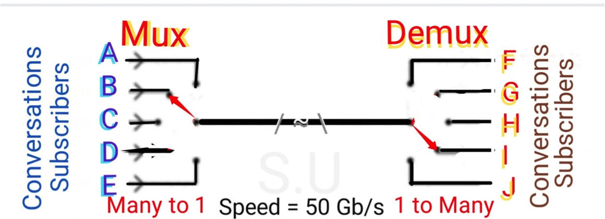
See fig : The basic function of a Multiplexer: Combining multiple inputs into a single data stream.
On the receiving side, a De-multiplexer splits the single data stream into the original multiple signals.
Above is time division multiplexer (TDM). In this at different times position , switch is at different locations.
4:1 high speed mux have speed about 50 Giga bits per second..
The above combination of Mux and Demux is used for economizing connections over a single channel, by connecting the multiplexer's single output to the de-multiplexer's single input.
Here you can understand how economically, efficiently 5 telephone subscribers at one location can communicate with subscribers at other location by properly connecting their addresses.
In above figure, LHS B is communicating with RHS I person.
In following figure D is communicating with G. Since speed is very high in Giga bits / sec People can communicate with individual without any interference.
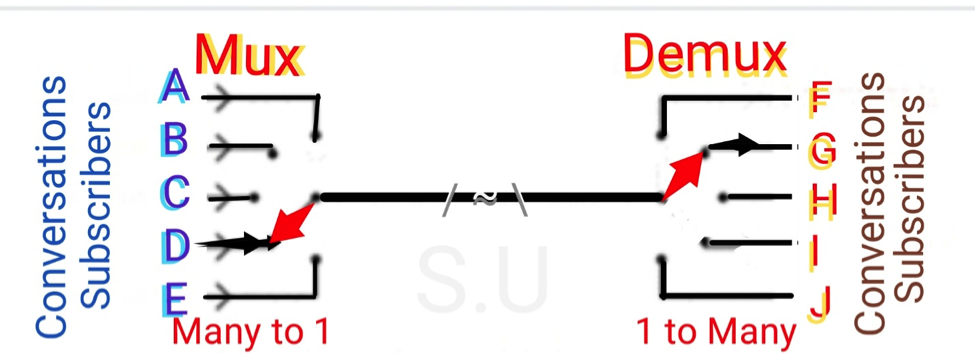
• 2-1 multiplexer ( 1select line)
• 4-1 multiplexer (2 select lines)
• 8-1 multiplexer(3 select lines)
• 16-1 multiplexer (4 select lines)
4:1 Multiplexer has four data inputs DO, D1, D2 & D3, two selection lines s1 & s0 and one output Y. The block diagram of 4:1 Multiplexer and it’s Truth table is shown in the following figure.
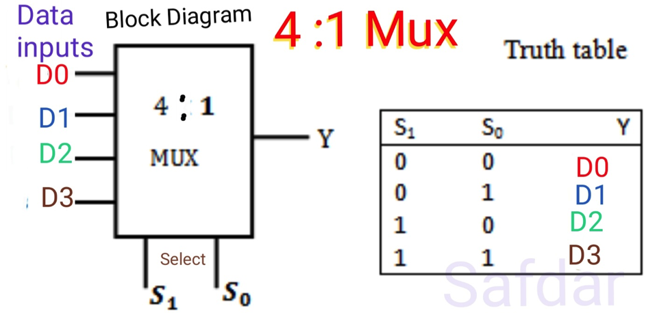
One of these 4 inputs will be connected to the output based on the combination of inputs present at these two selection lines
From Truth table, we can directly write the Boolean function for output, Y as
Y=S1′S0′D0+S1′S0D1+S1S0′D2+S1S0D3
We can implement this Boolean function using 2 Inverters, 4 AND gates & 1 OR gate.
The circuit diagram of 4 : 1 multiplexer is shown in the following figure.
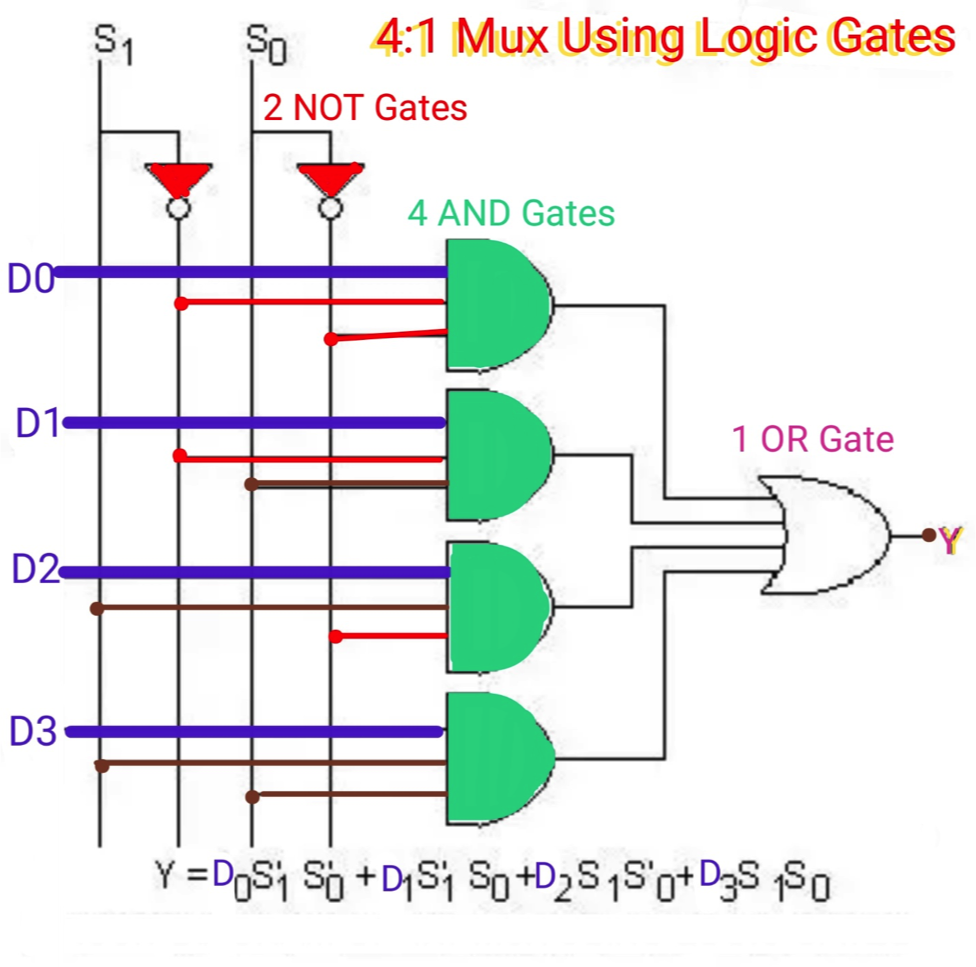
In explanation the working of the circuit, other definition of AND gate must be understood.
Definition of AND : For 3 inputs AND gate if 2 inputs are high then output is same as a 3rd Input of AND gate.
Hence inputs D0 will be transferred to output if select two inputs are high. Since address of D0 is 0 0 to make it 1 1 NOT gates are connected between select inputs and AND inputs.
Address of D1 is 0 1 , to make both inputs of AND high first 0 is given to NOT and second no. 1 is directly connected to AND.
Similarly for address 1 0 NOT is connected to second number
And for address 1 1 , no NOT gate is required.
• NB: Above technique is used throughout this chapter.
Using Above ,We can easily understand the operation of the above circuit.
Similarly, we can understand 8:1 and 16:1 multiplexer by following the same procedure.
In 8 x 1 Multiplexer, 8 represents number of inputs and 1 represents output line. So three (3) select lines are required to select one of the inputs.
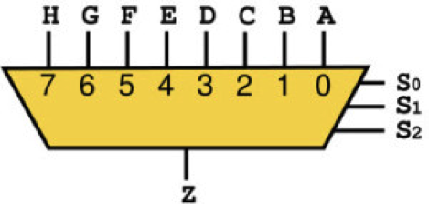
The 8-to-1 multiplexer consists of 8 input lines, one output line and 3 selection lines.
8-1 Multiplexer Circuit
For the combination of selection input, the data line is connected to the output line. The circuit shown below is an 8 : 1 multiplexer. The 8-to-1 multiplexer requires 8 AND gates, one OR gate and 3 selection lines. As an input, the combination of selection inputs are giving to the AND gate with the corresponding input data lines.
In a similar fashion, all the AND gates are given connection. In this 8 : 1 multiplexer, for any selection line input, one AND gate gives a value of 1 and the remaining all AND gates give 0. And, finally, by using OR gate, all the AND gates are added; and, this will be equal to the selected value.
8-1 Multiplexer Circuit using Logic gates.
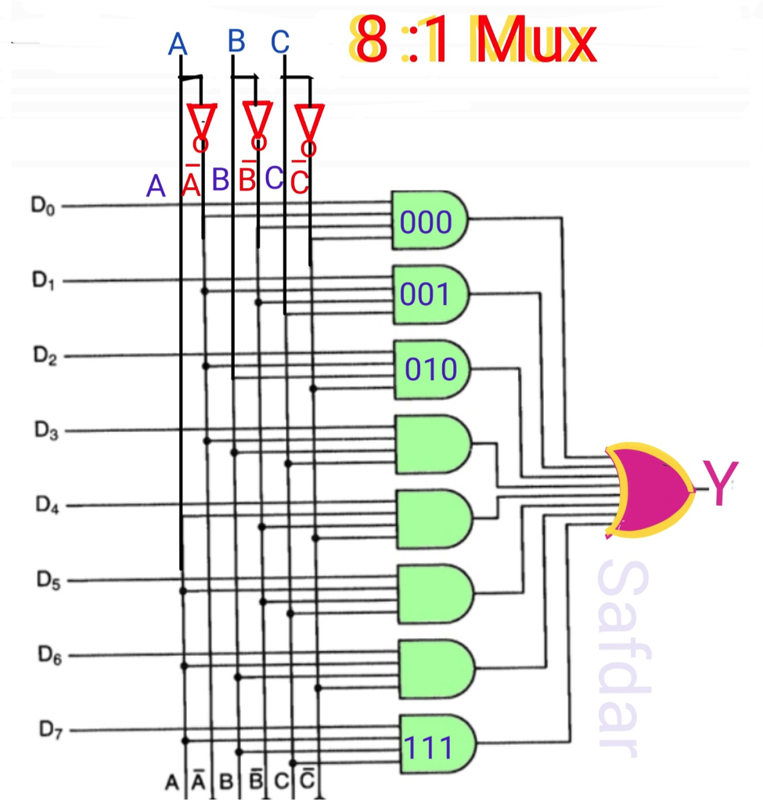
Truthtable of 8:1 Mux
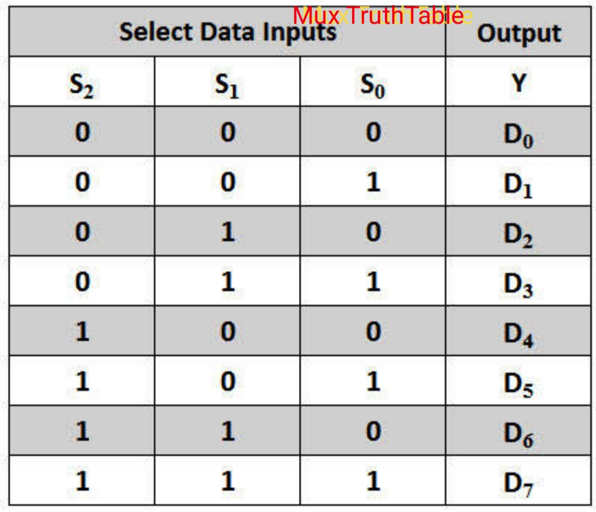
Multiplexers are used in various applications wherein multiple-data need to be transmitted by using single line.
• Communication System
A communication system has both a communication network and a transmission system. By using a multiplexer, the efficiency of the communication system can be increased by allowing the transmission of data, such as audio and video data from different channels through single lines or cables.
• Computer Memory
Multiplexers are used in computer memory to maintain a huge amount of memory in the computers, and also to reduce the number of copper lines required to connect the memory to other parts of the computer.
• Telephone Network
In telephone networks, multiple audio signals are integrated on a single line of transmission with the help of a multiplexer.
• Transmission from the Computer System of a Satellite
Multiplexer is used to transmit the data signals from the computer system of a spacecraft or a satellite to the ground system by using a GSM satellite.
Construction of 8:1 Mux using two 4:1 Mux and 1 OR gate.
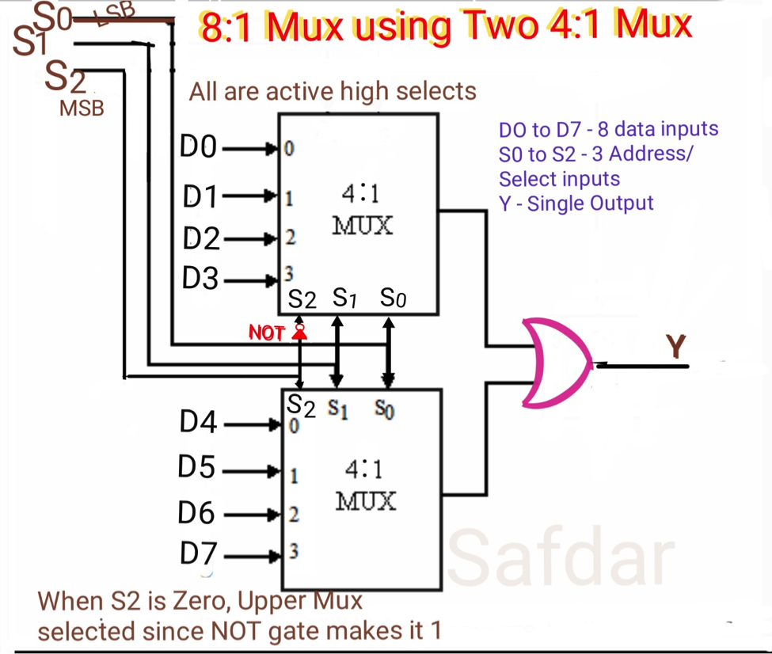
Truth Table is same as 8:1 Mux by Logic gates.
Working of this can be explained in exam by carefully watching upper diagram and using same Truth table.
De-multiplexer is also a device with one input and multiple output lines. It is used to send a signal to one of the many devices. The main difference between a multiplexer and a de-multiplexer is that a multiplexer takes two or more signals and encodes them on a wire, whereas a de-multiplexer does reverse to what the multiplexer does.
Demultiplexer is a combinational circuit that accepts multiplexed data and distributes over multiple output lines. In other words, the function of Demultiplexer is the inverse of the multiplexing operation.
Similar to Multiplexer, the output depends on the control inputs.
The control input or the ‘select’ input decides which output line is connected to the input.
Let us consider 1:4 Demultiplexer as shown in following figure below where: D is the input, S0 and S1 are the control inputs, Out0, Out 1, Out2, Out3,Out 4 are 4 output lines and the data is transmitted to one of the four outputs.
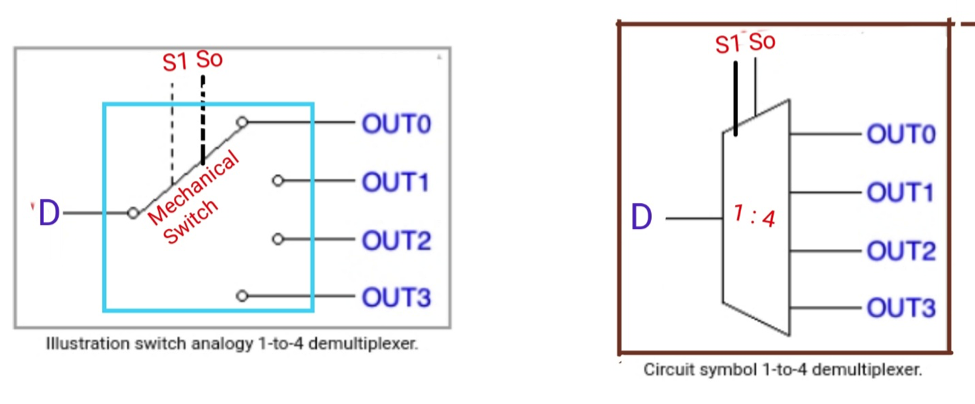
Schematic Diagram of 1:4 Demux.
Possible Outcomes
If S1S0 = 00, then D0 output of Demultiplexer receive the input data.
If S1S0 = 01, then output D1 receives the input data.
If S1S0 = 10, then input data is distributed to D2.
If S1S0 = 11, then output D3 receives the input data.
Hence, the logic equations for the outputs are:
D0 = S’1 S’0 D
D1 = S’1 S0 D
D2 = S1 S’ D
D 3= S1 S0 D
• 1-2 De-multiplexer (1 select line)
• 1-4 De-multiplexer (2 select lines)
• 1-8 De-multiplexer (3 select lines)
• 1-16 De-multiplexer (4 select lines)
The 1:2 Demux consists of 1 data input, 1 control bit and 2 output bits. I0 and I1 are the two output bits, S is the control bit or the select bit and D is the input bit.
Following figure illustrates the block diagram and circuit diagram of 1:2 Demux.
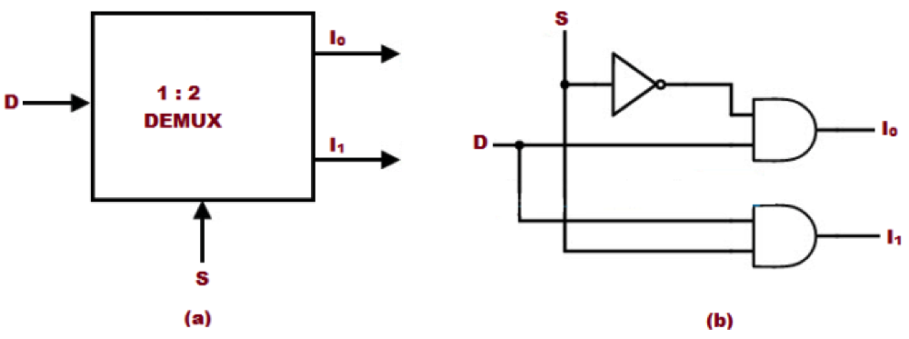
The 1:4 Demux consists of 1 data input bit, 2 control bits and 4 output bits. “Data in” is the input bit, D0, D1, D2, D3 are the four output bits and S0 and S1 are the control/Select bits.
Following figure illustrates the block diagram and circuit diagram of 1:4 Demux.
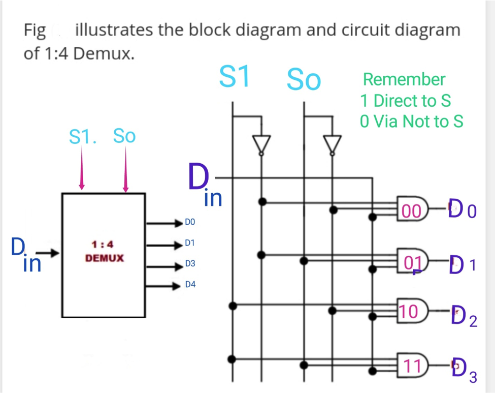
Same as above but with more details….
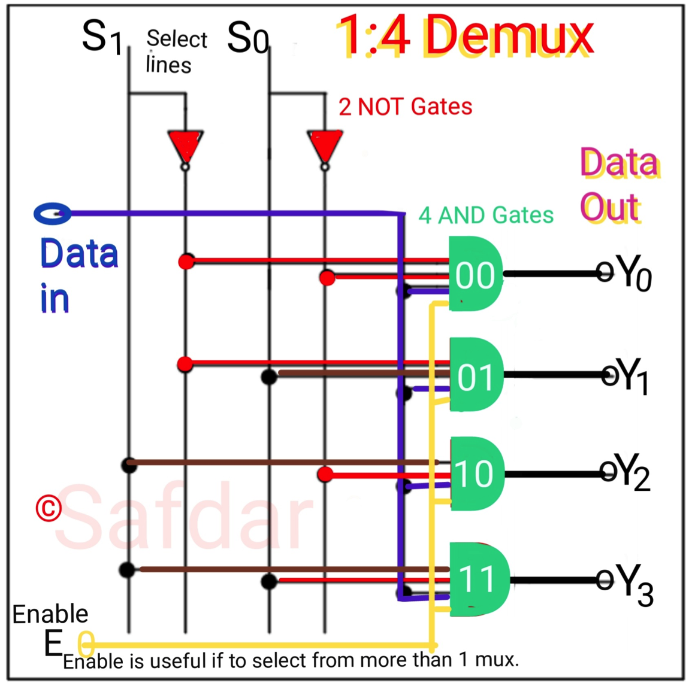
The 1:8 Demux consists of 1 data input bit, 3 control bits and 8 output bits.
I0, I1, I2, I3, I¬4, I5, I6, I7 are the eight output bits,
S0, S1 and S2 are the control bits and input D.
Following Fig illustrates the block diagram and circuit diagram of 1:8 Demux.
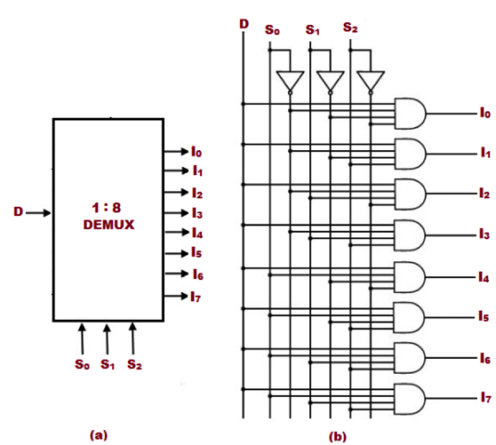
The 1:16 Demux consists of 1 data input bit, 4 control bits and 16 output bits. are the sixteen output bits, S0, S1, S2 and S3 are the control bits and D is the input bit and Y0 to Y15, 16 outputs.
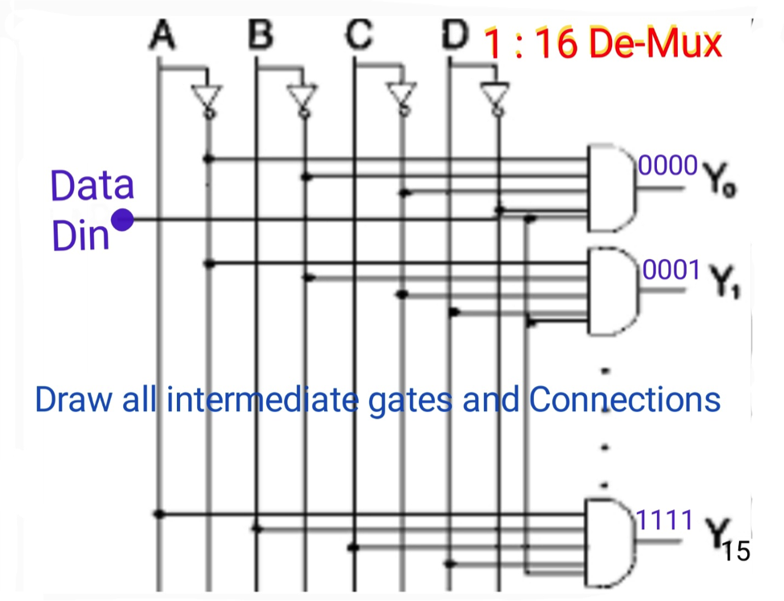
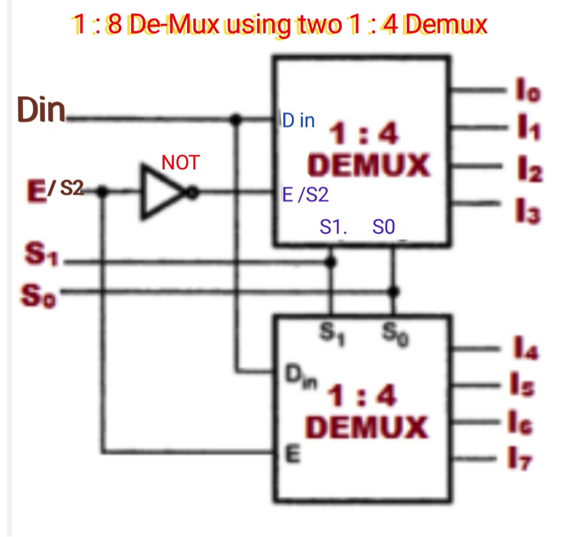
Cascading refers to a process where large Demuxes can be designed and implemented using smaller Demuxes.
Example: 1:8 Demux can be designed using two 1:4 Demuxes as shown in figure and similarly 1:16 Demuxes can be designed using two 1:8 Demultiplexers.
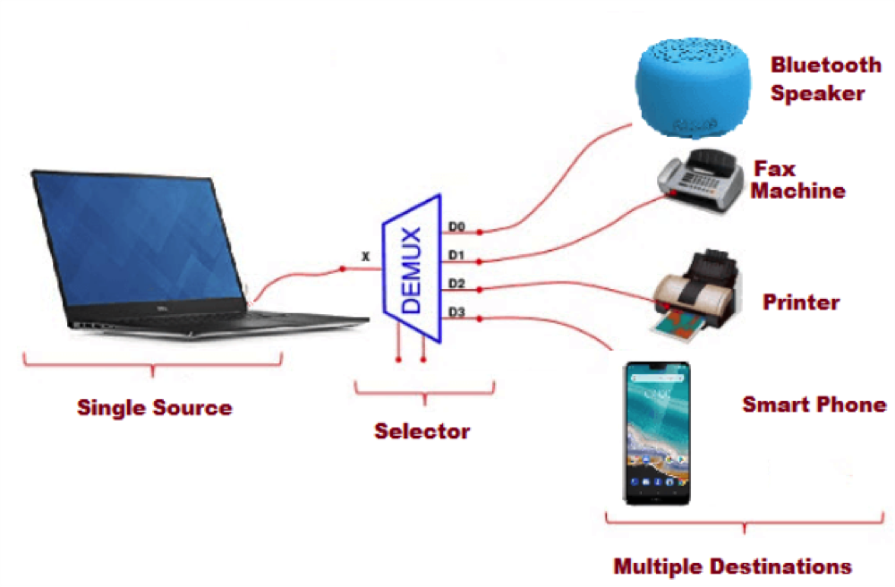
Transmission of Audio/Video signals requires combination of Multiplexers and Demultiplexers.
They are also used as decoders in security systems like banking sectors.
Combination of Demuxes with Muxes y the efficiency of the communication system.
Disadvantages of Demultiplexers
Wastage of Bandwidth might occur.
Delays might occur due to synchronization of signals.
De-Multiplexers are used to connect a single source to multiple destinations. These applications include the following:
Demultiplexers are used in clock data recovery solutions.
Demultiplexer along with multiplexer is necessary for any communication system for data transmission.
Demultiplexers are used in ATM packets broadcasting.
The output of Arithmetic Logic Unit is stored in respective registers using Demultiplexers.
They act as Serial to Parallel converter.
They are also used in Wavelength routers.
• Communication System
Mux and Demux both are used in communication system to carry out the process of data transmission. A De-multiplexer receives the output signals from the multiplexer and at the receiver end it converts them back to the original form.
• Arithmetic Logic Unit
The output of the ALU is fed as an input to the De-multiplexer, and the output of the Demultiplexer is connected to a multiple register. The output of the ALU can be stored in multiple registers.
• Serial to Parallel Converter
This converter is used to reconstruct parallel data. In this technique, serial data is given as an input to the De-multiplexer at a regular interval, and a counter is attached to the Demultiplexer at the control input to detect the data signal at the output of the Demultiplexer. When all data signals are stored, the output of the Demux can be read out in parallel.
The encoders play an essential role in digital electronics.
Encoders & decoders are used to convert data from one form to another form. These are frequently used in communication system such as telecommunication, networking to transfer data from one end to the other end. Similarly, in the digital domain, for easy transmission of data, it is often encrypted or placed within codes, and then transmitted.
At the receiver, the coded data is decrypted or gathered from the code and is processed in order to be displayed or given to the load accordingly.
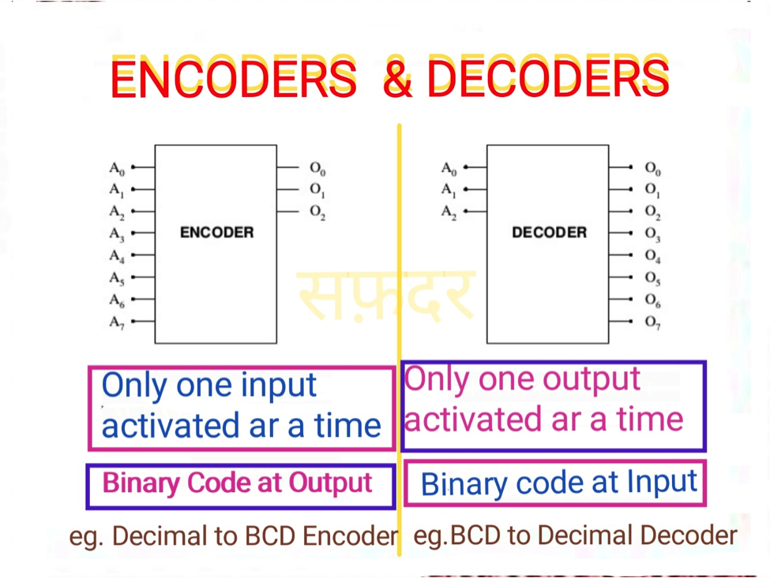
An encoder is an electronic device used to convert an analogue signal to a digital signal such as a BCD code. ( Known to Unknown). It has a number of input lines, but only one of the inputs is activated at a given time and produces an N-bit output code that depends on the activated input.. The encoder allows 2N inputs and generates N-number of outputs. For example, in 4-2 encoder, if we give 4 inputs it produces only 2 outputs.
The encoders are designed with logic gate such as an OR-gate. There are different types of encoders like 4 , 8, and 16 encoders and the truth table of encoder depends upon a particular encoder chosen by the user.
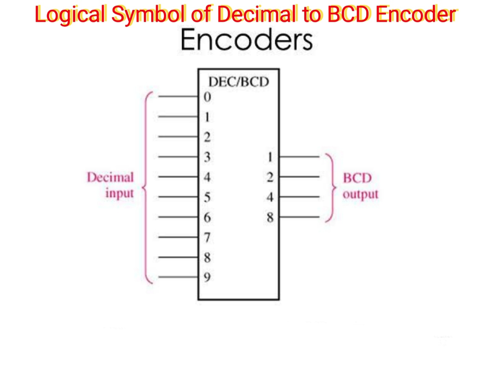
A normal encoder has a number of input lines amongst which only one of which is activated at a given time while a priority encoder has more than one input, which is activated based on priority. Which means that, the priority encoders are used to control interrupt requests by acting according to the highest priority request? If two or more inputs are equal to one – at the same time, the input having the highest priority will be preferred to take. Internal hardware will check this condition and priority, which is set.
Here, decimal to BCD encoder is being explained along with the truth table.
A decimal to BCD encoder has 10 input lines 0 to 9 and 4 output lines Y0 to Y3 (Or-ABCD)
From the truth table, the outputs can be expressed by following Boolean Function.
Note: Below Boolean functions are formed by ORing all the input lines for which output is 1. For instance Y0 is 1 for D1, D3, D5, D7 & D9 input lines.
Y0 = D = D1 + D3 + D5 + D7 + D9. LSB
Y1 = C = D2 + D3 + D6 + D7
Y2 = B = D4 + D5 + D6 + D7
Y3 = A = D8 + D9. MSB
The decimal to BCD encoder can therefore be implemented with OR gates whose inputs are determined directly from truth table as shown in the images.
Limitations With Decimal To BCD Encoder
A decimal to BCD encoder has limitations.
For 10 bits input, there can be 2^10 possible combinations, out of which only 10 are used using 4 output lines.
The discrepancy of 0 output due to all inputs being 0 or D0 being 0 is resolved by using additional input known as Enable
Only one input can be active at any given time.
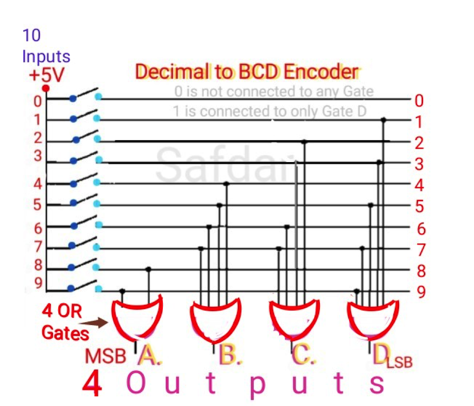
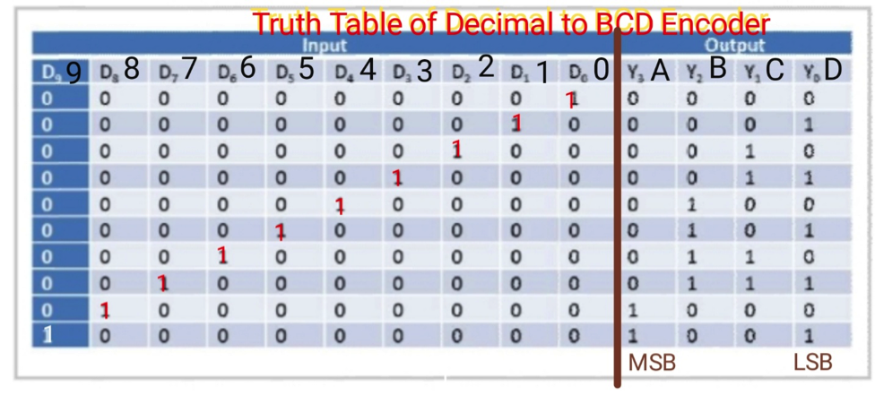
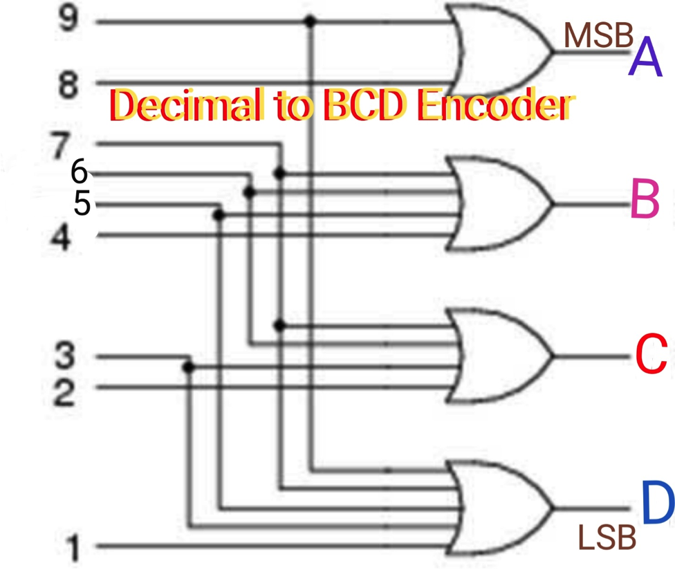
One more priority encoder example:
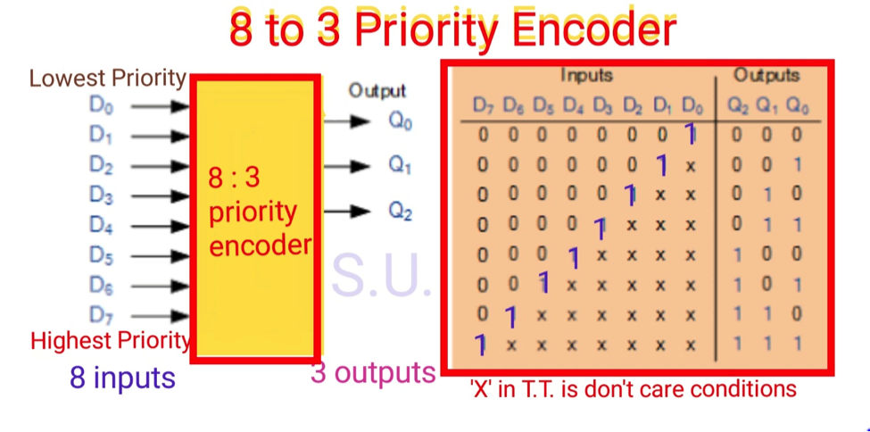
The decoder is an electronic device that is used to convert digital signal to an analogue signal(Unknown to Known). It allows single input line and produces multiple output lines. The decoders are used in many communication projects that are used to communicate between two devices. The decoder allows N- inputs and generates 2N-numbers of outputs. For example, if we give 2 inputs that will produce 4 outputs by using 4 by 2 decoder.
The decoders are designed with logic gates such as AND and NOT gate. There are different types of decoders like 4, 8, and 16 decoders and the truth table of decoder depends upon a particular decoder chosen by the user
2-to-4 line Decoder (Extra)
In this type , decoders contain two inputs A0, A1, and four outputs represented by D0, D1, D2, and D3. As you can see in the truth table – for each input combination, one output line is activated.
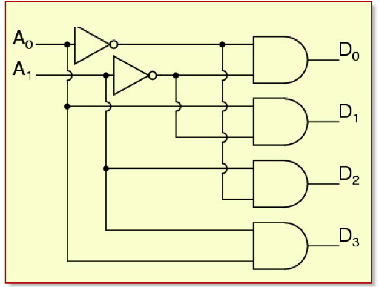
1. D0 =A1 A0, which corresponds to input 00
2. D1 =A1 A0, which corresponds to input 01
3. D2 =A1 A0, which corresponds to input 10
4. D3 =A1 A0, which corresponds to input 11
( Complements are not marked in upper A1 and A0)
The circuit is implemented with AND gates, as shown in the figure. In this circuit, the logic equation for D0 is A1 A0, and so on. Thus, each output of the decoder will be generated to the input combination.
A Display Decoder/Driver is a combinational circuit which decodes n-bit input value into a number of output lines and also drive a 7 Segment LED / LCD display.
A Digital Decoder IC, converts one digital format (BCD) into another(7 Segment) by Binary Coded Decimal (BCD) to 7-Segment Display Decoder.
This displays digital data in the form of numbers, letters or even alpha-numerical characters.
7 Segment Display consist of seven individual coloured LED’s (called the segments), within one single display package. In order to produce the required numbers or HEX characters from 0 to 9 and A to F respectively, on the display the correct combination of LED segments need to be illuminated. Decoders IC 74LS47 is used to do it. It is common cathode type display. Hence whichever cathode is connected to Low that segment only Glow. Remaining segments remain Off.
A standard 7-segment LED display generally has eight 10 input connections, one for each LED segment, thus 7 for 7 segments. 8th one acts as a common terminal for all the internal display segments.9th input pin is used to display a decimal point. 10th is useless.
Two types of 7-segment LED digital display are available.
• 1. The Common Cathode Display– All the cathodes of the LED’s are joined together to ground. The individual segments are illuminated by application of a Logic “1” signal to the individual Anode terminals.
• 2. The Common Anode Display – All the anodes are joined together to logic “1” and the individual segments are illuminated by connecting the individual Cathode terminals to a Low.
To display the number “5” segments a, c, d, f and g would be illuminated. If we wanted to display a different number or letter then a different set of segments would need to be illuminated.
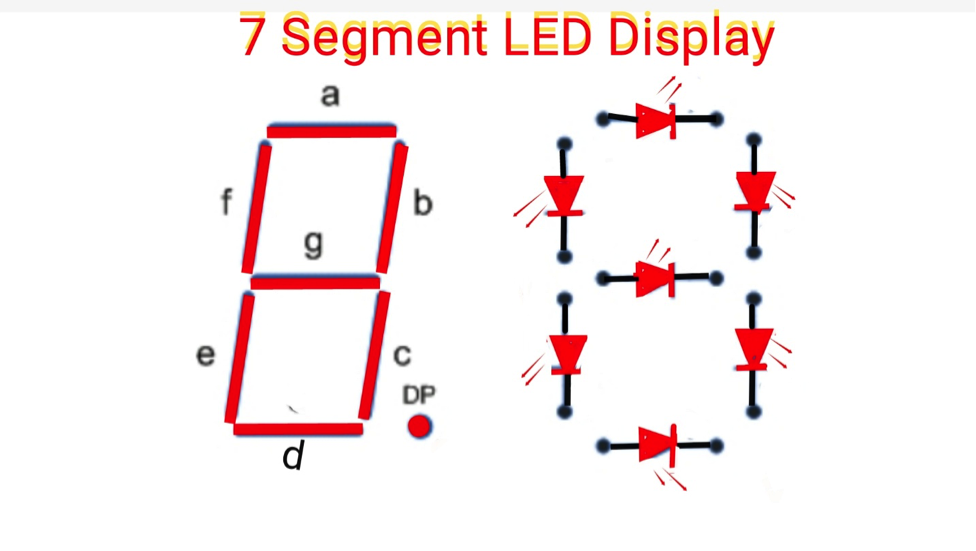
7-segment display truth table gives the idea of segments that need to be glow in order to produce different symbols.
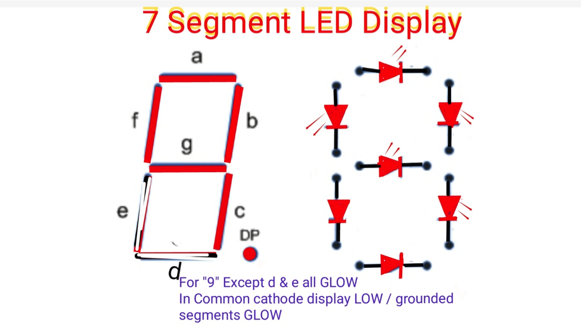
Truth Table for a 7-segment display assuming common cathode display where Low means Glow and High means LED OFF.
It can be seen that to display any single digit number from 0 to 9 in binary or letters from A to F in hexadecimal, we would require seven separate segment connections plus one additional connection for the LED’s “common” connection.
As the segments are light emitting diodes, the driving circuit for 1 LED glow would need to produce up to 30mA of current and to display the number “8”, all seven segments would need to be glow resulting a total current of nearly 210mA, (7 x 30mA).
Obviously, the use of so many connections and power consumption is impractical for some electronic or microprocessor based circuits and so in order to reduce the number of signal lines required to drive just one single display, display decoders such as the BCD to 7-Segment Display Decoder and Driver IC’s are used instead.
Binary Coded Decimal (BCD or “8421” BCD) numbers are made up of group of 4 bits (a nibble).
BCD numbers only range from 0 to 9.
In practice current limiting resistors of about 150Ω to 330Ω would be connected in series between the decoder/driver chip and each LED display segment to limit the maximum current flow. There are different display decoders and drivers available for the different types of available displays, either LED or LCD. For example, the 74LS48 for common-cathode LED types, the 74LS47 for common-anode LED types.
CMOS CD4543 is used for LCD types.
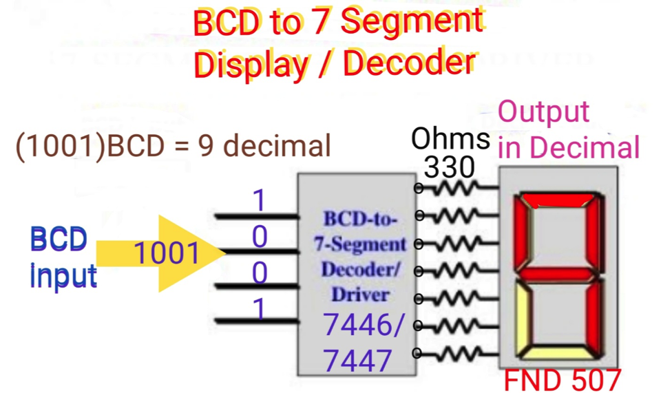
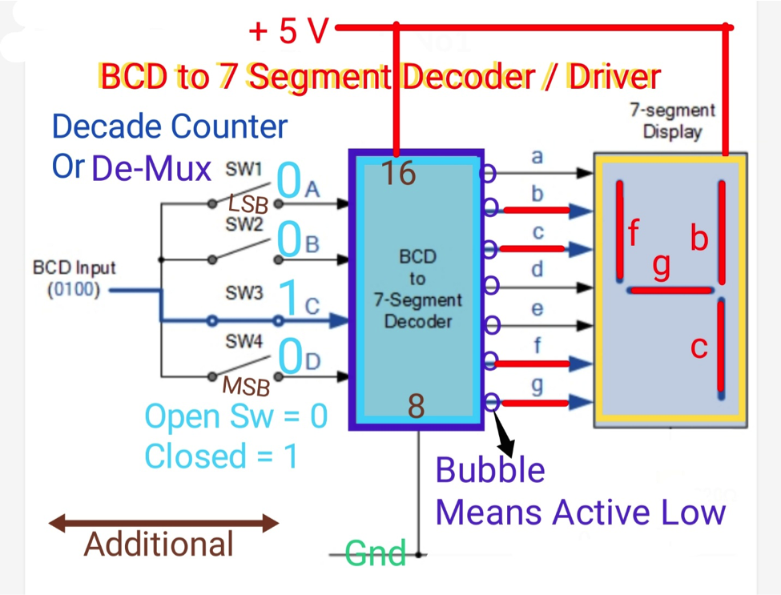